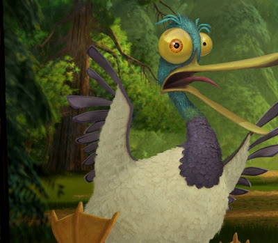

Serge

Serge é um pato com sotaque francês deuteragonista da animação O bicho vai pegar. Traumatizado e afetado pela temporada de caça, Serge e seu companheiro pato Deni foram os únicos patos a sobreviver durante a grande imigração que estava acontecendo no mesmo período, vivendo agora na floresta junto com os outros animais.
Ele se junta a bug com os outros para dar fim a tormenta causada pelo início da temporada, e após obtiverem sucesso, todos vivem mais tranquilos na floresta até os acontecimentos do filme seguinte. Serge é companheiro e cúmplice das aventuras de bug e os outros animais que residem na floresta.
Filmes:
- O bicho vai pegar;
Disponível em: Netflix.
- O bicho vai pegar 2;
- O bicho vai pegar 3.
Disponível em: AppleTV.